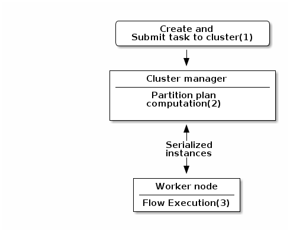

Talend Components Definitions Documentation
1. Component definition
Talend Component Kit framework relies on several primitive components.
All components can use @PostConstruct and @PreDestroy annotations to initialize or release some underlying resource at the beginning and the end of a processing.
In distributed environments, class constructor are called on cluster manager node. Methods annotated with @PostConstruct and @PreDestroy are called on worker nodes. Thus, partition plan computation and pipeline tasks are performed on different nodes.
|

-
The created task is a JAR file containing class information, which describes the pipeline (flow) that should be processed in cluster.
-
During the partition plan computation step, the pipeline is analyzed and split into stages. The cluster manager node instantiates mappers/processors, gets estimated data size using mappers, and splits created mappers according to the estimated data size.
All instances are then serialized and sent to the worker node. -
Serialized instances are received and deserialized. Methods annotated with
@PostConstructare called. After that, pipeline execution starts. The @BeforeGroup annotated method of the processor is called before processing the first element in chunk.
After processing the number of records estimated as chunk size, the@AfterGroupannotated method of the processor is called. Chunk size is calculated depending on the environment the pipeline is processed by. Once the pipeline is processed, methods annotated with@PreDestroyare called.
| All the methods managed by the framework must be public. Private methods are ignored. |


| The framework is designed to be as declarative as possible but also to stay extensible by not using fixed interfaces or method signatures. This allows to incrementally add new features of the underlying implementations. |
1.1. PartitionMapper
A PartitionMapper is a component able to split itself to make the execution more efficient.
This concept is borrowed from big data and useful in this context only (BEAM executions).
The idea is to divide the work before executing it in order to reduce the overall execution time.
The process is the following:
-
The size of the data you work on is estimated. This part can be heuristic and not very precise.
-
From that size, the execution engine (runner for Beam) requests the mapper to split itself in N mappers with a subset of the overall work.
-
The leaf (final) mapper is used as a
Producer(actual reader) factory.
This kind of component must be Serializable to be distributable.
|
1.1.1. Definition
A partition mapper requires three methods marked with specific annotations:
-
@Assessorfor the evaluating method -
@Splitfor the dividing method -
@Emitterfor theProducerfactory
@Assessor
The Assessor method returns the estimated size of the data related to the component (depending its configuration).
It must return a Number and must not take any parameter.
For example:
@Assessor
public long estimateDataSetByteSize() {
return ....;
}@Split
The Split method returns a collection of partition mappers and can take optionally a @PartitionSize long value as parameter, which is the requested size of the dataset per sub partition mapper.
For example:
@Split
public List<MyMapper> split(@PartitionSize final long desiredSize) {
return ....;
}1.2. Producer
AÂ Producer is a component interacting with a physical source. It produces input data for the processing flow.
A producer is a simple component that must have a @Producer method without any parameter. It can return any data:
@Producer
public MyData produces() {
return ...;
}1.3. Processor
A Processor is a component that converts incoming data to a different model.
A processor must have a method decorated with @ElementListener taking an incoming data and returning the processed data:
@ElementListener
public MyNewData map(final MyData data) {
return ...;
}Processors must be Serializable because they are distributed components.
If you just need to access data on a map-based ruleset, you can use JsonObject as parameter type.
From there, Talend Component Kit wraps the data to allow you to access it as a map. The parameter type is not enforced.
This means that if you know you will get a SuperCustomDto, then you can use it as parameter type. But for generic components that are reusable in any chain, it is highly encouraged to use JsonObject until you have an evaluation language-based processor that has its own way to access components.
For example:
@ElementListener
public MyNewData map(final JsonObject incomingData) {
String name = incomingData.getString("name");
int name = incomingData.getInt("age");
return ...;
}
// equivalent to (using POJO subclassing)
public class Person {
private String age;
private int age;
// getters/setters
}
@ElementListener
public MyNewData map(final Person person) {
String name = person.getName();
int age = person.getAge();
return ...;
}A processor also supports @BeforeGroup and @AfterGroup methods, which must not have any parameter and return void values. Any other result would be ignored.
These methods are used by the runtime to mark a chunk of the data in a way which is estimated good for the execution flow size.
Because the size is estimated, the size of a group can vary. It is even possible to have groups of size 1.
|
It is recommended to batch records, for performance reasons:
@BeforeGroup
public void initBatch() {
// ...
}
@AfterGroup
public void endBatch() {
// ...
}
It is a good practice to support a maxBatchSize here and to commit before the end of the group, in case of a computed size that is way too big for your backend to handle.
|
1.4. Multiple outputs
In some cases, you may need to split the output of a processor in two. A common example is to have "main" and "reject" branches where part of the incoming data are passed to a specific bucket to be processed later.
To do that, you can use @Output as replacement of the returned value:
@ElementListener
public void map(final MyData data, @Output final OutputEmitter<MyNewData> output) {
output.emit(createNewData(data));
}Alternatively, you can pass a string that represents the new branch:
@ElementListener
public void map(final MyData data,
@Output final OutputEmitter<MyNewData> main,
@Output("rejected") final OutputEmitter<MyNewDataWithError> rejected) {
if (isRejected(data)) {
rejected.emit(createNewData(data));
} else {
main.emit(createNewData(data));
}
}
// or
@ElementListener
public MyNewData map(final MyData data,
@Output("rejected") final OutputEmitter<MyNewDataWithError> rejected) {
if (isSuspicious(data)) {
rejected.emit(createNewData(data));
return createNewData(data); // in this case the processing continues but notifies another channel
}
return createNewData(data);
}1.5. Multiple inputs
Having multiple inputs is similar to having multiple outputs, except that an OutputEmitter wrapper is not needed:
@ElementListener
public MyNewData map(@Input final MyData data, @Input("input2") final MyData2 data2) {
return createNewData(data1, data2);
}@Input takes the input name as parameter. If no name is set, it defaults to the "main (default)" input branch. It is recommended to use the default branch when possible and to avoid naming branches according to the component semantic.
1.6. Output
An Output is a Processor that does not return any data.
Conceptually, an output is a data listener. It matches the concept of processor. Being the last component of the execution chain or returning no data makes your processor an output component:
@ElementListener
public void store(final MyData data) {
// ...
}1.7. Combiners
Currently, Talend Component Kit does not allow you to define a Combiner.
A combiner is the symmetric part of a partition mapper and allows to aggregate results in a single partition.
1.8. Family and component icons
Every component family and component needs to have a representative icon.
You can use one of the icons provided by the framework or you can use a custom icon.
For the component family the icon is defined in the package-info.java file. For the component itself, you need to declare it in the component class.
To use a custom icon, you need to have the icon file placed in the resources/icons folder of the project.
The icon file needs to have a name following the convention IconName_icon32.png, where you can replace IconName by the name of your choice.
@Icon(value = Icon.IconType.CUSTOM, custom = "IconName")2. Configuring components
Components are configured using their constructor parameters. They can all be marked with the @Option property, which lets you give a name to parameters.
For the name to be correct, you must follow these guidelines:
-
Use a valid Java name.
-
Do not include any
.character in it. -
Do not start the name with a
$. -
Defining a name is optional. If you don’t set a specific name, it defaults to the bytecode name, which can require you to compile with a
-parameterflag to not end up with names such asarg0,arg1, and so on.
Parameter types can be primitives or complex objects with fields decorated with @Option exactly like method parameters.
| It is recommended to use simple models which can be serialized in order to ease serialized component implementations. |
For example:
class FileFormat implements Serializable {
@Option("type")
private FileType type = FileType.CSV;
@Option("max-records")
private int maxRecords = 1024;
}
@PartitionMapper(family = "demo", name = "file-reader")
public MyFileReader(@Option("file-path") final File file,
@Option("file-format") final FileFormat format) {
// ...
}Using this kind of API makes the configuration extensible and component-oriented, which allows you to define all you need.
The instantiation of the parameters is done from the properties passed to the component.
Examples of option names:
| Option name | Valid |
|---|---|
myName |
|
my_name |
|
my.name |
|
$myName |
2.1. Primitives
A primitive is a class which can be directly converted from a String to the expected type.
It includes all Java primitives, like the String type itself, but also all types with a org.apache.xbean.propertyeditor.Converter:
-
BigDecimal -
BigInteger -
File -
InetAddress -
ObjectName -
URI -
URL -
Pattern
2.2. Complex object mapping
The conversion from property to object uses the Dot notation.
For example, assuming the method parameter was configured with @Option("file"):
file.path = /home/user/input.csv
file.format = CSVmatches
public class FileOptions {
@Option("path")
private File path;
@Option("format")
private Format format;
}2.2.1. List case
Lists rely on an indexed syntax to define their elements.
For example, assuming that the list parameter is named files and that the elements are of the  FileOptions type, you can define a list of two elements as follows:
files[0].path = /home/user/input1.csv
files[0].format = CSV
files[1].path = /home/user/input2.xml
files[1].format = EXCEL2.2.2. Map case
Similarly to the list case, the map uses .key[index] and .value[index] to represent its keys and values:
// Map<String, FileOptions>
files.key[0] = first-file
files.value[0].path = /home/user/input1.csv
files.value[0].type = CSV
files.key[1] = second-file
files.value[1].path = /home/user/input2.xml
files.value[1].type = EXCEL// Map<FileOptions, String>
files.key[0].path = /home/user/input1.csv
files.key[0].type = CSV
files.value[0] = first-file
files.key[1].path = /home/user/input2.xml
files.key[1].type = EXCEL
files.value[1] = second-file| Avoid using the Map type. For example, if you can configure your component with an object instead. |
2.3. Defining Constraints and validations on the configuration
You can use metadata to specify that a field is required or has a minimum size, and so on. This is done using the validation metadata in the org.talend.sdk.component.api.configuration.constraint package:
| API | Name | Parameter Type | Description | Supported Types | Metadata sample |
|---|---|---|---|---|---|
@org.talend.sdk.component.api.configuration.constraint.Max |
maxLength |
double |
Ensure the decorated option size is validated with a higher bound. |
CharSequence |
|
@org.talend.sdk.component.api.configuration.constraint.Min |
minLength |
double |
Ensure the decorated option size is validated with a lower bound. |
CharSequence |
|
@org.talend.sdk.component.api.configuration.constraint.Pattern |
pattern |
string |
Validate the decorated string with a javascript pattern (even into the Studio). |
CharSequence |
|
@org.talend.sdk.component.api.configuration.constraint.Max |
max |
double |
Ensure the decorated option size is validated with a higher bound. |
Number, int, short, byte, long, double, float |
|
@org.talend.sdk.component.api.configuration.constraint.Min |
min |
double |
Ensure the decorated option size is validated with a lower bound. |
Number, int, short, byte, long, double, float |
|
@org.talend.sdk.component.api.configuration.constraint.Required |
required |
- |
Mark the field as being mandatory. |
Object |
|
@org.talend.sdk.component.api.configuration.constraint.Max |
maxItems |
double |
Ensure the decorated option size is validated with a higher bound. |
Collection |
|
@org.talend.sdk.component.api.configuration.constraint.Min |
minItems |
double |
Ensure the decorated option size is validated with a lower bound. |
Collection |
|
@org.talend.sdk.component.api.configuration.constraint.Uniques |
uniqueItems |
- |
Ensure the elements of the collection must be distinct (kind of set). |
Collection |
|
When using the programmatic API, metadata is prefixed by tcomp::. This prefix is stripped in the web for convenience, and the table above uses the web keys.
|
Also note that these validations are executed before the runtime is started
(when loading the component instance) and that the execution will fail if they don’t pass.
If somehow it breaks your application you can disable that validation on the JVM by setting the system property talend.component.configuration.validation.skip to true.
2.4. Marking a configuration as a particular type of data
It is common to classify the incoming data. It is similar to tagging data with several types. Data can commonly be categorized as follows:
-
Datastore: The data you need to connect to the backend.
-
Dataset: A datastore coupled with the data you need to execute an action.
| API | Type | Description | Metadata sample |
|---|---|---|---|
o.t.s.c.api.configuration.type.DataSet |
dataset |
Mark a model (complex object) as being a dataset. |
|
o.t.s.c.api.configuration.type.DataStore |
datastore |
Mark a model (complex object) as being a datastore (connection to a backend). |
|
| The component family associated with a configuration type (datastore/dataset) is always the one related to the component using that configuration. |
Those configuration types can be composed to provide one configuration item. For example, a dataset type often needs a datastore type to be provided. A datastore type (that provides the connection information) is used to create a dataset type.
Those configuration types are also used at design time to create shared configurations that can be stored and used at runtime.
For example, in the case of a relational database that supports JDBC:
-
A datastore can be made of:
-
a JDBC URL
-
a username
-
a password.
-
-
A dataset can be made of:
-
a datastore (that provides the data required to connect to the database)
-
a table name
-
data.
-
The component server scans all configuration types and returns a configuration type index. This index can be used for the integration into the targeted platforms (Studio, web applications, and so on).
The configuration type index is represented as a flat tree that contains all the configuration types, which themselves are represented as nodes and indexed by ID.
Every node can point to other nodes. This relation is represented as an array of edges that provides the child IDs.
As an illustration, a configuration type index for the example above can be defined as follows:
{nodes: {
"idForDstore": { datastore:"datastore data", edges:[id:"idForDset"] },
"idForDset": { dataset:"dataset data" }
}
}2.5. Defining links between properties
If you need to define a binding between properties, you can use a set of annotations:
| API | Name | Description | Metadata Sample |
|---|---|---|---|
@o.t.s.c.api.configuration.condition.ActiveIf |
if |
If the evaluation of the element at the location matches value then the element is considered active, otherwise it is deactivated. |
|
@o.t.s.c.api.configuration.condition.ActiveIfs |
ifs |
Allows to set multiple visibility conditions on the same property. |
|
The target element location is specified as a relative path to the current location, using Unix path characters.
The configuration class delimiter is /.
The parent configuration class is specified by ...
Thus, ../targetProperty denotes a property, which is located in the parent configuration class and is named targetProperty.
When using the programmatic API, metadata is prefixed with tcomp::. This prefix is stripped in the web for convenience, and the previous table uses the web keys.
|
2.6. Adding hints about the rendering based on configuration/component knowledge
In some cases, you may need to add metadata about the configuration to let the UI render that configuration properly.
For example, a password value that must be hidden and not a simple clear input box. For these cases - if you want to change the UI rendering - you can use a particular set of annotations:
| API | Description | Generated property metadata |
|---|---|---|
@o.t.s.c.api.configuration.ui.DefaultValue |
Provide a default value the UI can use - only for primitive fields. |
|
@o.t.s.c.api.configuration.ui.OptionsOrder |
Allows to sort a class properties. |
|
@o.t.s.c.api.configuration.ui.layout.AutoLayout |
Request the rendered to do what it thinks is best. |
|
@o.t.s.c.api.configuration.ui.layout.GridLayout |
Advanced layout to place properties by row, this is exclusive with |
|
@o.t.s.c.api.configuration.ui.layout.GridLayouts |
Allow to configure multiple grid layouts on the same class, qualified with a classifier (name) |
|
@o.t.s.c.api.configuration.ui.layout.HorizontalLayout |
Put on a configuration class it notifies the UI an horizontal layout is preferred. |
|
@o.t.s.c.api.configuration.ui.layout.VerticalLayout |
Put on a configuration class it notifies the UI a vertical layout is preferred. |
|
@o.t.s.c.api.configuration.ui.widget.Code |
Mark a field as being represented by some code widget (vs textarea for instance). |
|
@o.t.s.c.api.configuration.ui.widget.Credential |
Mark a field as being a credential. It is typically used to hide the value in the UI. |
|
@o.t.s.c.api.configuration.ui.widget.Structure |
Mark a List<String> or Map<String, String> field as being represented as the component data selector (field names generally or field names as key and type as value). |
|
@o.t.s.c.api.configuration.ui.widget.TextArea |
Mark a field as being represented by a textarea(multiline text input). |
|
When using the programmatic API, metadata is prefixed with tcomp::. This prefix is stripped in the web for convenience, and the previous table uses the web keys.
|
Target support should cover org.talend.core.model.process.EParameterFieldType but you need to ensure that the web renderer is able to handle the same widgets.
3. Widget and validation gallery
3.1. Widgets
| Name | Code | Studio Rendering | Web Rendering |
|---|---|---|---|
Input/Text |
|

|

|
Password |
|

|

|
Textarea |
|

|
|
Checkbox |
|

|

|
List |
|

|
|
List |
|
|
|
Table |
|

|

|
Code |
|

|

|
Schema |
|

|

|
3.2. Validations
| Name | Code | Studio Rendering | Web Rendering |
|---|---|---|---|
Property validation |
|

|

|
Property validation with Pattern |
|

|
|
Data store validation |
|

|
You can also use other types of validation that are similar to @Pattern:
-
@Min,@Maxfor numbers. -
@Uniquefor collection values. -
@Requiredfor a required configuration.
4. Registering components
As you may have read in the Getting Started, you need an annotation to register your component through the family method. Multiple components can use the same family value but the family + name pair must be unique for the system.
In order to share the same component family name and to avoid repetitions in all family methods,
you can use the @Components annotation on the root package of your component. It allows you to define the component family and the categories the component belongs to (Misc by default if not set).
Here is a sample package-info.java:
@Components(name = "my_component_family", categories = "My Category")
package org.talend.sdk.component.sample;
import org.talend.sdk.component.api.component.Components;Another example with an existing component:
@Components(name = "Salesforce", categories = {"Business", "Cloud"})
package org.talend.sdk.component.sample;
import org.talend.sdk.component.api.component.Components;4.1. Components metadata
Components can require metadata to be integrated in Talend Studio or Cloud platforms.
Metadata is set on the component class and belongs to the org.talend.sdk.component.api.component package.
| API | Description |
|---|---|
@Icon |
Sets an icon key used to represent the component. You can use a custom key with the |
@Version |
Sets the component version. 1 by default. |
Example:
@Icon(FILE_XML_O)
@PartitionMapper(name = "jaxbInput")
public class JaxbPartitionMapper implements Serializable {
// ...
}4.1.1. Managing version configuration
If some changes impact the configuration, they can be managed through a migration handler at the component level (enabling trans-model migration support).
The @Version annotation supports a migrationHandler method which migrates the incoming configuration to the current model.
For example, if the filepath configuration entry from v1 changed to location in v2, you can remap the value in your MigrationHandler implementation.
A best practice is to split migrations into services that you can inject in the migration handler (through constructor) rather than managing all migrations directly in the handler. For example:
// full component code structure skipped for brievity, kept only migration part
@Version(value = 3, migrationHandler = MyComponent.Migrations.class)
public class MyComponent {
// the component code...
private interface VersionConfigurationHandler {
Map<String, String> migrate(Map<String, String> incomingData);
}
public static class Migrations {
private final List<VersionConfigurationHandler> handlers;
// VersionConfigurationHandler implementations are decorated with @Service
public Migrations(final List<VersionConfigurationHandler> migrations) {
this.handlers = migrations;
this.handlers.sort(/*some custom logic*/);
}
@Override
public Map<String, String> migrate(int incomingVersion, Map<String, String> incomingData) {
Map<String, String> out = incomingData;
for (MigrationHandler handler : handlers) {
out = handler.migrate(out);
}
}
}
}What is important to notice in this snippet is not the way the code is organized, but rather the fact that you can organize your migrations the way that best fits your component.
If you need to apply migrations in a specific order, make sure that they are sorted.
|
Consider this API as a migration callback rather than a migration API. Adjust the migration code structure you need behind the MigrationHandler, based on your component requirements, using service injection.
|
5. Component internationalization
In common cases, you can store messages using a properties file in your component module to use internationalization.
Store the properties file in the same package as the related components and name it Messages. For example, org.talend.demo.MyComponent uses org.talend.demo.Messages[locale].properties.
5.1. Default components keys
Out of the box components are internationalized using the same location logic for the resource bundle. The supported keys are:
| Name Pattern | Description |
|---|---|
${family}._displayName |
Display name of the family |
${family}.${category}._category |
Display name of the category |
${family}.${configurationType}.${name}._displayName |
Display name of a configuration type (dataStore or dataSet) |
${family}.${component_name}._displayName |
Display name of the component (used by the GUIs) |
${property_path}._displayName |
Display name of the option. |
${simple_class_name}.${property_name}._displayName |
Display name of the option using its class name. |
${enum_simple_class_name}.${enum_name}._displayName |
Display name of the |
${property_path}._placeholder |
Placeholder of the option. |
Example of configuration for a component named list and belonging to the memory family (@Emitter(family = "memory", name = "list")):
memory.list._displayName = Memory ListConfiguration classes can be translated using the simple class name in the messages properties file. This is useful in case of common configurations shared by multiple components.
For example, if you have a configuration class as follows :
public class MyConfig {
@Option
private String host;
@Option
private int port;
}You can give it a translatable display name by adding ${simple_class_name}.${property_name}._displayName to Messages.properties under the same package as the configuration class.
MyConfig.host._displayName = Server Host Name
MyConfig.host._placeholder = Enter Server Host Name...
MyConfig.port._displayName = Server Port
MyConfig.port._placeholder = Enter Server Port...| If you have a display name using the property path, it overrides the display name defined using the simple class name. This rule also applies to placeholders. |